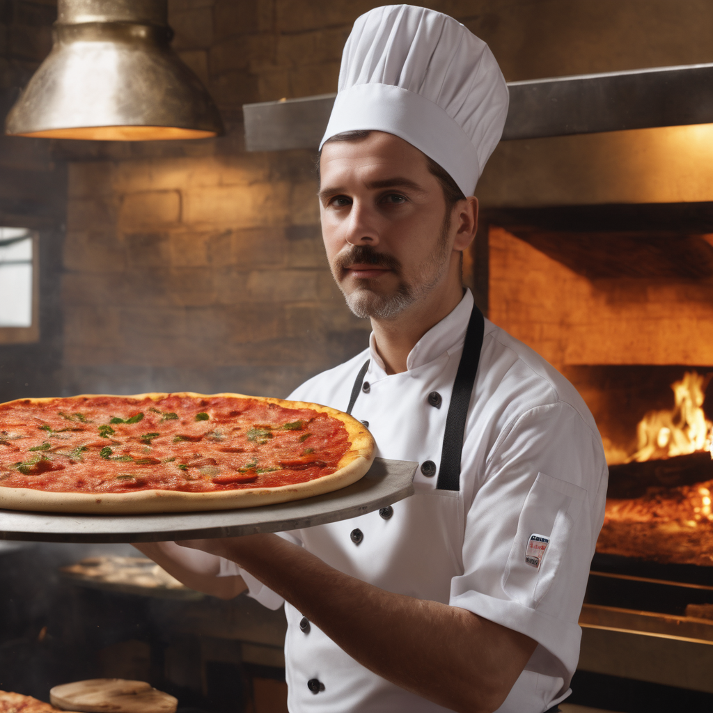

Az eredeti nápolyi pizzák világában utazva, a Pizzeria "Pumpi" nem csupán egy étterem, hanem egy valódi kulináris kaland. Hiszünk abban, hogy az igazi pizza Nápolyból származik, és a Nápolyi hagyományokhoz való hűség kulcsfontosságú az autentikus ízélmény eléréséhez.
A pizzakészítés művészetét évszázadokra visszavezetve, megértettük, hogy a valódi nápolyi pizza születéséhez a tészta művészete és a legjobb minőségű alapanyagok egyesítése szükséges. A pizza története 1889-ig nyúlik vissza, amikor Raffaele Esposito egy igazi mesterművet alkotott a Margherita di Savoia olasz királynő tiszteletére. Azóta a pizza szimbolizálja Nápolyt és az olasz konyhát a világ minden táján.
A Pizzeria "Pumpi" nem csupán egy étterem Nyíregyházán, hanem egy misztikus utazás, ahol a tészta, a kovász, és a kiváló minőségű alapanyagok találkoznak az igazi nápolyi receptekben. A tészta hagyományosan elkészítve, legalább 24 órán át kelesztve, hogy könnyed és emészthető legyen. Az alapanyagokat gondosan válogatva, csak a legjobb minőségű terméseket használva. A sütés magas hőmérsékleten, 450 °C-on, ahol a pizza gyorsan és tökéletesen sül meg, megőrizve az ízeket és a tészta tökéletes állagát.
A Pizzeria "Pumpi" létrehozása előtt elköteleztük magunkat, hogy a Nápolyi pizzakészítés minden titkát megismerjük és megtapasztaljuk. Ma már büszkén állíthatjuk, hogy sikerült teljesítenünk küldetésünket: a valódi nápolyi ízeket Nyíregyházára hozni.
Minden nap az ügyfeleink elégedettsége a legfőbb célunk. Az ön mosolya ösztönzés számunkra, hogy mindig a legjobb legyen, és hogy minden egyes szeletünk egy kis Nápolyi íz csodát rejtsen. Üdvözöljük a Pizzeria "Pumpi" világában, ahol minden szelet egy történet, és minden íz egy utazás Nápolyba. Ez vagyunk mi, ez a Pumpi!
|

Nagy Péter |
Kiss Ákos |
|
Kovács Klára |
Magyar Lajos |